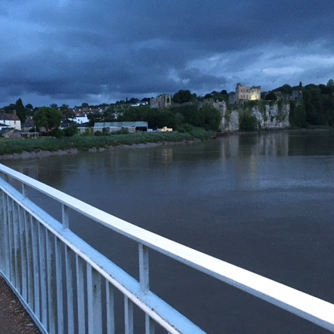
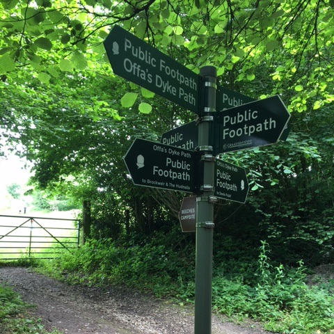
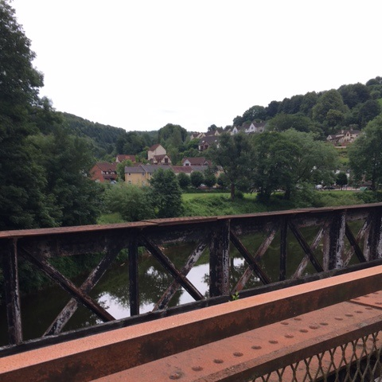
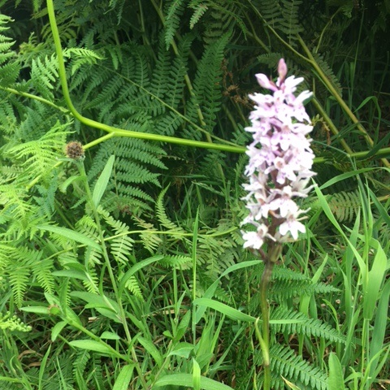
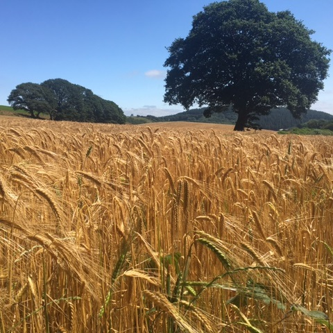
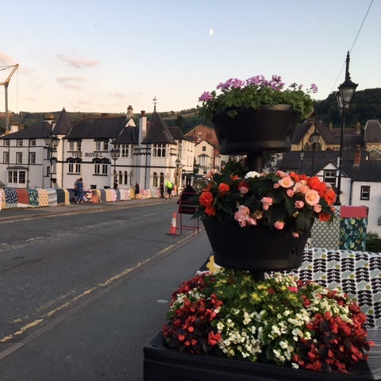

The Offa's Dyke Path
Stretching from the River Severn to the Irish Sea is a magnificent long-distance footpath known as the Offa's Dyke Path. The 177-mile path offers the walker a fantastic and diverse challenge as it winds through meadows and woods, along rivers and canals, past castles and forts, and over hills and mountains. The route roughly follows the line of the Welsh-English border within the Welsh Marches region, and much of its length follows the course of the ancient and iconic Offa's Dyke earthwork.
This classic walk also takes in numerous stunning towns towns and villages, many of which provide refreshments and accommodation. The whole walk can usually be accomplished by a reasonably fit walker within two weeks.
Offa's Dyke Walks looks after all your accommodation and baggage transfer along the route. Use the buttons at the bottom of this page to book your holiday or to ask us a question.
Image Gallery
Chepstow
The Offa's Dyke path starts just south of Chepstow on the northern bank of the River Severn.
Woodland near Tintern
Most of the route is easy to follow, with numerous signposts and clearly defined paths.
Redbrook
Accommodation is available in the attractive village of Redbrook three miles south of Monmouth.
Wild orchid
The path takes you through some exquisite natural landscapes, such this meadow near Hay-on-Wye.
Barley field
The varied landscapes of the trail include the golden barley fields of Radnorshire.
Llangollen
After crossing the famous Pontcysyllte aqueduct you will be charmed by the village of Llangollen.